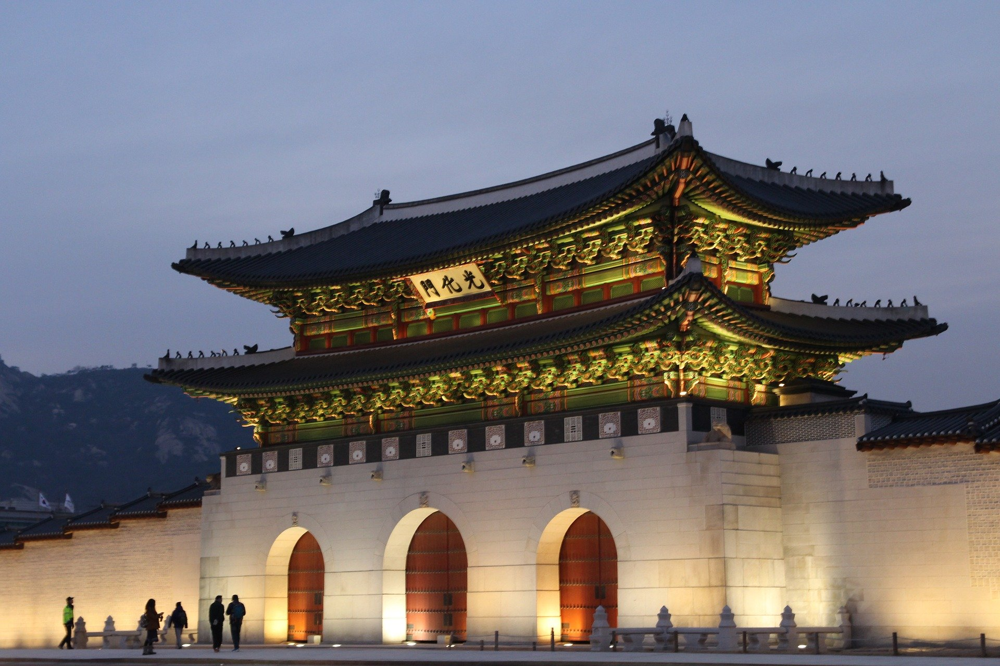
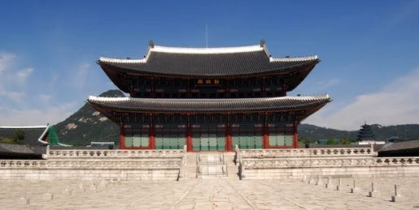
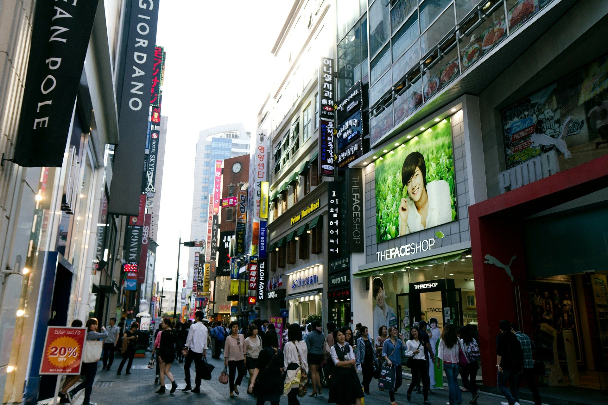
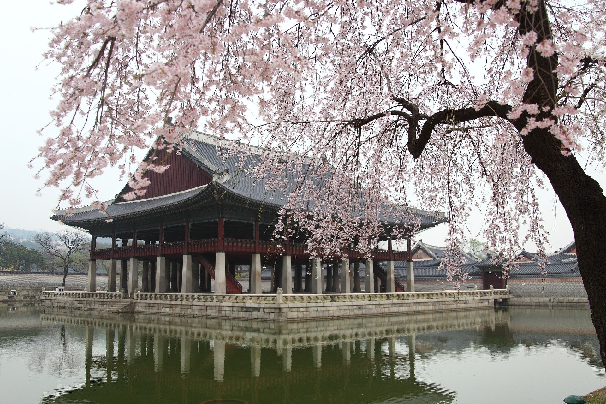
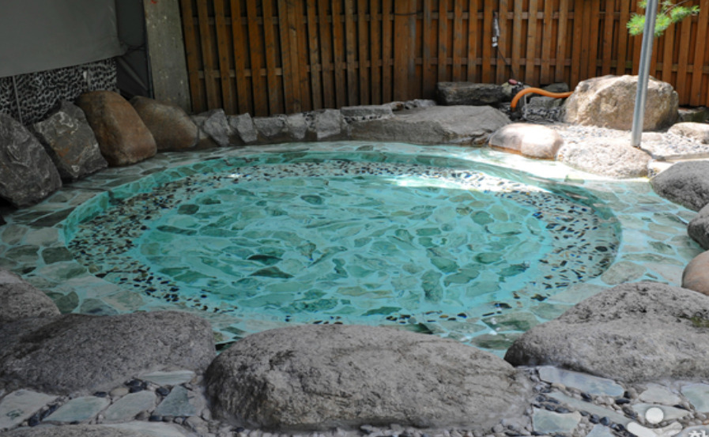

This is Hanriver.
As you can see, Hanriver is so wide!
There are many beautiful bridges also lots of people go Hanriver park and rest!
They order fried chickens a lot
If you work near Hanriver about 5minutes, you will get so many chicken flyers
I'm sure it's the best choice in Hanriver

In the night, the lights of bridges and buildings make Hanriver more beautiful at night
Also you can ride a bike there,
The riding course of Hanriver is amazing
You will feel peace from the river and trees
You can also borrow a picnic set!
The picnic sets are so cute but perfect for dating
A "History Waterway" was created to flow underground water from Gyeongbokgung Station
and Gwanghwamun Station on the subway to Cheonggyecheon Stream.
A "Hatch Madang" was created to connect the ground and Gwanghwamun Station behind Admiral Yi Sun-shin's statue
to make it easier for citizens to go to and from the square. Except for the regular square,
it was used as a 10-lane roadway and sidewalk, and traffic control was implemented according to the size of the event,
expanding to 67m wide for medium-sized events and 100m wide for large-scale events.
Near the statue of Admiral Yi Sun-shin, there are hydroponic facilities such as Sharp Fountain (bronze left and right),
Floor Fountain (bronze front), and others.
The 'Cheonggye Stream Connection' between Sejongno Intersection and

Cheonggye Square was created as the connection axis of the pedestrian network
connecting Cheonggyecheon Stream and Gyeongbokgung Palace.
Gyeongbokgung Palace is the best Beopgung Palace of the Joseon Dynasty.
Bukaksan Mountain is located in the north, and there is a wide Yukjo Street (now Sejong-ro) in front of Gwanghwamun, the main gate.
It is also the center of the urban planning of Hanyang (Seoul), the capital of Joseon.
It was founded by King Taejo Yi Seonggye in 1395.
It was burnt down by the Japanese Invasion of 1592 and reconstructed in 1867.
Inside the palace, there are political facilities for kings and officials,
living spaces for royalty, and supporting spaces for relaxation.
In addition, there are complex palaces in the palace, including the queen's palace,
the crown prince's palace, and King Gojong's Geoncheong Palace.
Most of the buildings in the Japanese occupation, however, only removal of some central building.
Fortunately, a full-fledged restoration project was carried out in 1990,
restoring the original features of the king and queen's sediment, Donggung Palace, Geoncheong Palace, and Taewonjeon Hall.
This is Myungdong.
This is one of my favorite spot in Seoul.
As you can see in the picture,
It's SO ENERGETIC
There are many shopping places
I'm sure
Everyone will
love
This place
♥
Gyeonghoeru is a pond structure of Gyeongbokgung Palace.
It is generally not normally accessible to protect cultural assets.
You can watch it under the guidance of the cultural heritage commentator.
You can hear the history and learn how to enjoy the atmosphere and mood of the pond
The best Oncheon near Seoul
Yeoju, Gyeonggido is one of my favorite spot near Seoul
Located at the top of Satgatbong Peak, it is the only hot spring in Yeoju.
Many people say that alkaline hot spring water, which contains a lot of natural minerals including sodium,
has been effective in dermatitis or atopic diseases.
Slippery hot spring water, if you touch it with your hands,
will keep your stomach healthy if you drink it constantly.
If you want to rest in hot water, don't hesitate, just visit Yeoju Oncheon